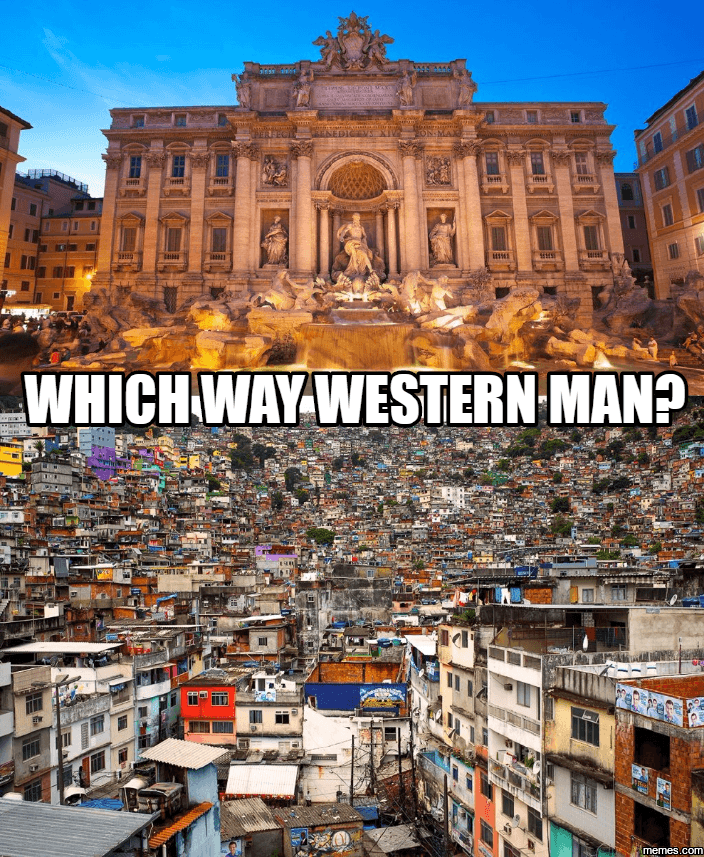

Michael is the author of Staying Married in a Degenerate Age. Follow him on Twitter or Facebook. You can read more of his writing at Honor and Daring.


After Charlottesville, the alt right finds itself in an odd position: it is falsely demonized by the media and the GOP as “Nazis,” it is disavowed by the alt lite, and the government seems to view it as a potential terrorist organization. People who peacefully participated in the rally have lost jobs and been thrown out of colleges. What happens next to a political movement that finds itself a pariah?

The US desperately needs a right-wing movement. What currently passes for the right in the US is the Republican Party. While most GOP politicians talk a good show about conserving society, they actually govern as globalist liberals. For example, “conservatives” pretend they are pro-life, but when they had the opportunity to defeat Planned Parenthood earlier this year, they didn’t bother. And while the GOP has been promising to repeal Obamacare for seven years, when they finally got the opportunity to do it, they opted to do nothing. Thus, the US needs a real alternative to the progressive decline offered by both of the current parties.
Unfortunately, the dissident right in the US is not currently constituted in any form that could make it a viable alternative. It is currently no more than an unorganized group of people who generally agree that immigration and globalism are destroying the country. Here are some possible ideas on which paths the alternative right could take:

The “extremists” of the past.
There are a small number on the hard edge of the dissident right that advocate for a separation that would bring a quick end to the current government. One proposed form of this would be to secede from the United States. Although the US itself started as a revolutionary break with its parent nation, the conditions that made it successful no longer exist. One of these that the English colonies were separated from England by the Atlantic Ocean. That made continued British control logistically difficult for the crown. Now, natural barriers are easily surmounted.
Later, when the same tactic was taken by a large number of Southern states, it led to a crushing defeat in the Civil War. It is doubtful that a modern effort would meet with better results. Thus, any discussion of leaving the United States has to remain at the level of the theoretical for the foreseeable future.

An example of the brilliant memes the Alt Right used to help Trump get elected.
Although physical warfare is a bad idea at the present time, psychological techniques are a winning strategy. In a nutshell, memetic warfare is to present ideas in a form where they are assimilated quickly and easily. And memetic warfare happens to be a specialty of the alt right. During the Trump campaign, the alt right ran rings around the old school conservatives at National Review. They were able to convey ideas in seconds with a graphic that took the “true conservatives” entire essays to essays to achieve.
Memetic warfare continues to be the most effective weapon in the dissident right’s arsenal. But the globalist elite are now aware of the effectiveness of this type of psychological combat. All left-wing attempts at mimicking the alt right’s memes have failed so they have resorted to censorship to stop the effectiveness of memes. Any alt right twitter account with a large number of followers was banned. Even Milo, who’s views are fairly tame, found himself banned from Twitter.
The censorship has taken even more draconian forms. The alt right website, The Daily Stormer, became the first website to be banned because it posed too much a danger to the establishment. Even Gab, an alternative to Twitter that was started with the explicit intent to allow all speech, recently has begun censoring users under threat of its domain provider. Despite these setbacks, memetic warfare will continue to be one of the most powerful weapons the dissident right possesses.
Unite the Right torch rally.
Up until now, the biggest real-world activity that the alt right has engaged in has been rallies. Although the alt right has just as much right to hold rallies as Black Lives Matter, the reality is that the latter group is favored by the elite while the former is not. That means that news reporting will always be staged to make the dissident right appear to be a hate group. And as the Unite the Right rally in Charlottesville demonstrated, right-wing groups cannot rely on the local governments to protect their constitutional right to assemble.
Plus the benefit of a rally is limited. Yes, you can get some good optics, such as the peaceful nighttime torch gathering at Unite the Right, but leaders of the right need to recognize that optics are easily co-opted by the media. There are ways to perform an end run around the media, but rallies do not seem to be a promising strategy for the immediate future.
Think you are not qualified to be a leader? Then accept that you will be ruled by men like this.
There are a few within the dissident right that like to use Nazi imagery such as Roman salutes or swastikas. This is a dubious strategy, even if done ironically, as it is gives the media a set of optics that are easily exploited. But what I don’t see is the dissident right doing is emulating any of the successful strategies of prior rightwing movements. For example, Adolf Hitler did the hard work necessary to take over an existing workers’ party and turn it into a vehicle to win democratic elections.
The US does not have a parliamentary system like Germany did so the only option is to take over one of two main parties. The logical vehicle would be the GOP, but the transformation of the GOP into a right-wing party can’t be done by a single, charismatic leader. Rather, it would require many right leaning men to join the party and gradually assume positions of leadership. The alt right is well-positioned to do this precisely because it is a movement without centralized leadership.
To do this, men who identify with the dissident right will need to exercise prudence with regard to how much of their ideology they reveal publicly. One of things that hampers right-wingers on this point is that they feel they must be fully forthright with their beliefs about everything. When asked about feminism, equality, or democracy, traditional men often believe they are required to condemn these things unequivocally. But doing so means that they will be disqualified from participating in the political process—at least in the current environment. In this case, revealing too much information is self-defeating.
Leftists, on the other hand, are smarter when it comes to concealing their views. Leftists will spend their entire careers espousing banal centrist views. It is only when they attain power that they begin to implement their radical ideas. Even then, they will continue to pretend that they are centrists. You’ll never catch a high ranking leftist politician wearing a Che Guevara t-shirt or waving a Soviet flag. Their goal is to gain power in the present, not to resurrect some past version of their ideology.
Concealment plays a necessary skill in life and it is especially necessary in democratic politics. As Ivan Throne writes in The Nine Laws:
Master each realm of concealment. Learn well to conceal thoughts, lest they betray. Learn well to draw curtains across purpose, so that it is not thwarted. Understand that survival is at odds with prominence.
Political leaders can shift the Overton Window to the right—Donald Trump’s campaign was proof that this was possible. But as long as we live in a democratic society the shifts must happen gradually. Therefore, learn from the leftists. Gain power first. There will be ample time to move to the right after that.
Whether the subject is the Twelve Apostles, the 20th Century Fascists, or the Bolsheviks, history teaches that when a small group of men is united in purpose, they can achieve dramatic change in a short period of time. Thus, the fourth strategy is the one that carries the greatest chance of long term success. Unfortunately, I don’t see that happening on any sort of a large scale.
Read More: How Hillary Lost The War On Pepe